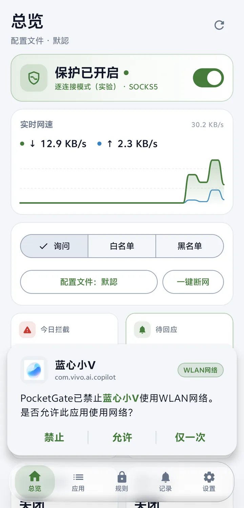
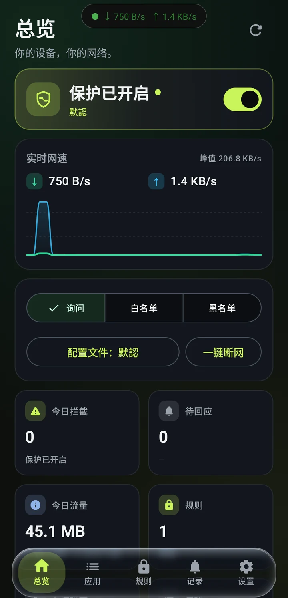
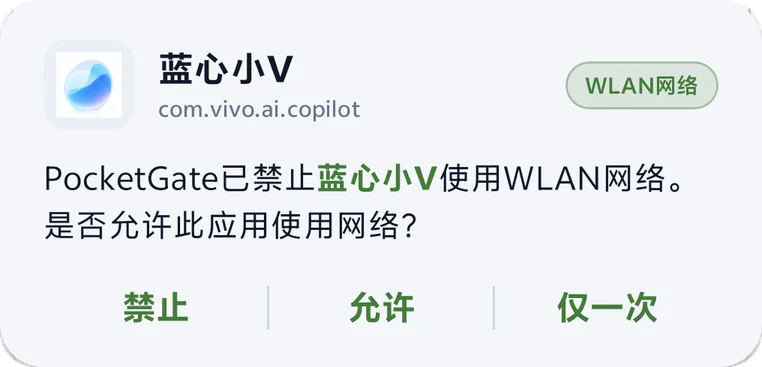
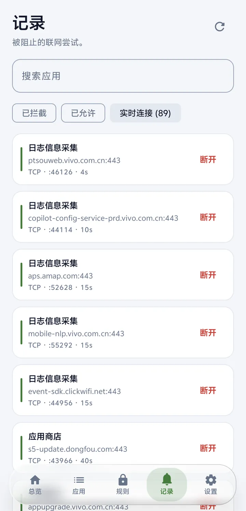
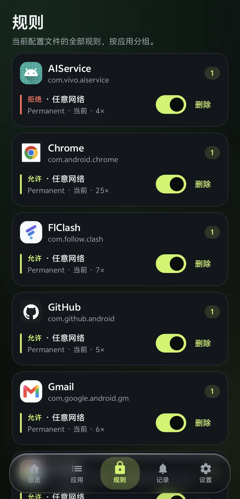
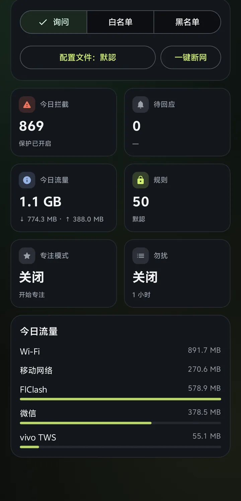
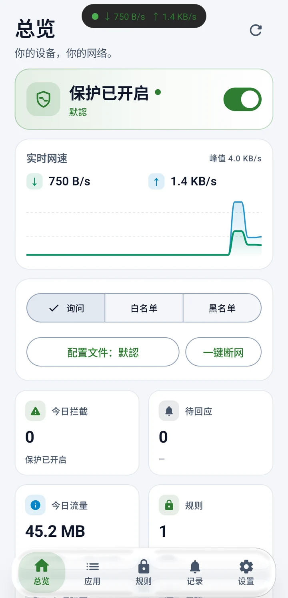
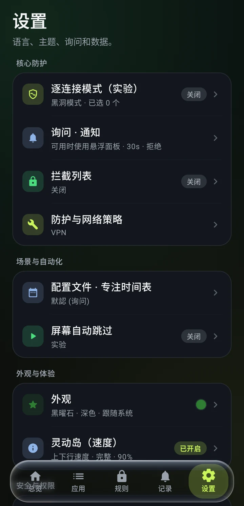

Android 10+ · 免 Root · 本地运行
PocketGatefor Android
装在手机里的出站防火墙。每个应用第一次联网，都先问你。
不需要 Root，不需要账号。允许、拒绝或仅此一次，由你决定。


01 — 询问
联网的那一刻，问你一次
新应用第一次联网时，询问直接出现在眼前。回答一次，就生成一条规则，以后不再打扰。
- 禁止 · 允许 · 仅一次
- 限时规则
- 多条连接合并询问
- 通知里直接回答
悬浮询问需要「悬浮窗」与「使用情况访问」两项权限，缺一项会改用通知询问。

02 — 实时连接
每一条连接，都看得见
此刻谁在联网、连去哪里、持续多久，一目了然。系统自带的「日志信息采集」也无处藏身，点「断开」立即切断。
- 实时连接
- 一键断开
- 拦截记录
- CSV 导出

03 — 规则
规则按应用归类，一眼看清
允许还是拒绝、对哪些网络生效、命中了多少次，都在一张卡片上。换个 Wi-Fi 或 SIM 卡，配置文件自动跟着切换。
- 域名 · IP · 端口条件
- 配置文件
- 按网络自动切换
- 导入导出

04 — 总览
流量去了哪里，一页看完
今日拦截、今日流量和各应用的流量排行；需要专心时，一键进入专注模式，只留下你选的几个应用。
- 双色网速波形与峰值
- 流量排行
- 专注模式与时间表
- 勿扰

05 — 两种引擎
一个 VPN 名额，两种用法
VPN 建在你的手机上，流量不会被送到任何服务器。
默认 · 最省电
黑洞模式
被拒绝的应用进入 VPN 后直接丢弃，被允许的应用完全不经过 PocketGate。
转发 · 更精细
逐连线模式
每条连接按应用、域名、端口单独判决；支持按应用分流出口（TCP 与 UDP），可自由组合内置直连与自己的 SOCKS5 代理。
06 — 更多功能
防火墙之外，还有这些
拦截清单7 份公开名单，外加追踪器识别
专注模式支持定时自动启停与拦截摘要
仅前台联网退到后台自动禁网，省电又防偷跑
按应用分流TCP 与 UDP 可按应用分配直连或代理
锁屏断网锁屏后只放行白名单应用
灵动岛屏幕顶部的实时网速
小部件与磁贴不打开应用也能开关保护
第三方自动化开放 Tasker / MacroDroid 广播接口
应用锁改规则之前先验证指纹或密码
应用分身沿用主应用规则，或单独管控
代理诊断三步找出 SOCKS5 代理的问题
纯离线模式应用自己绝不发起联网
完整备份与同步全量快照与 WebDAV 端到端加密
液态玻璃导航Android 13+ 实时光学折射玻璃质感
自动更新后台下载，一键覆盖安装
三语界面简体 · 繁體 · English
07 — 外观
六套主题，深浅都好看
跟随系统深浅色，也可以随时换一种风格。


- 黑曜石极客
- 经典
- 极简霜白
- 极光流光
- 纯黑省电
- 系统取色
08 — 隐私
你的网络，只留在你的手机上
0
遥测不统计、不上报，没有任何分析 SDK0
账号与服务器规则和日志只存在本机；同步时先加密再上传1
必需权限只有 VPN 授权是必需的，其余都可选查看每项权限的用途
| 权限 | 用来做什么 | 没有它会怎样 |
|---|---|---|
| VPN 授权 | 在本机接管出站流量 | 无法拦截 |
| 通知 | 保护状态、通知询问 | 看不到通知询问 |
| 使用情况访问 | 判断前台应用、流量排行 | 悬浮询问改为通知 |
| 悬浮窗 | 悬浮询问、灵动岛 | 悬浮询问改为通知 |
| 读取应用列表 | 逐个应用设置规则 | 部分系统只能看到少数应用 |
| 忽略电池优化 | 防止后台被清理 | 保护可能被系统中断 |
10 — 更新
最近更新
0.17
2026-11-25- 全新分组设置与液态玻璃底栏
- 仅前台联网（后台自动禁网）
- 按应用分流出口（TCP + UDP）
- Tasker / MacroDroid 自动化接口
- 专注定时与摘要通知
- 双色网速波形与峰值
- 完整快照备份 v2
0.16
2026-11-20- WebDAV 加密同步
- 本地备份与还原
- 应用分身单独管控
- 更新弹窗显示更新日志
0.15
2026-11-19- 实时连接一键断开
- 状态栏网速图标
- 代理诊断
- 纯离线模式
- 首次权限引导
0.14
2026-11-19- 全新总览仪表盘
- 网速波形
- 空闲时更省电
0.13
2026-11-18- 正式定名 PocketGate
- 应用内更新
- 六套主题
11 — 常见问题
常见问题
需要 Root 吗？
不需要。PocketGate 使用 Android 提供给所有应用的本地 VPN 接口，流量只在手机上处理。
耗电吗？
黑洞模式下被允许的应用不经过 PocketGate，耗电很低；逐连线模式要转发所有流量，会高一些。
为什么悬浮询问没有出现？
请在「设置 → 权限体检」里确认「悬浮窗」和「使用情况访问」都已授权；屏幕关闭或锁屏时，询问会改为通知。
支持串联本地网络调试工具吗？
支持。关闭其他工具的虚拟网卡模式，仅保留本地 SOCKS5 端口，再在 PocketGate 的逐连线模式里把出口指向该端口即可。
开源吗？
开源，GPL-3.0 协议，源代码在 GitHub 与 Gitee 上。